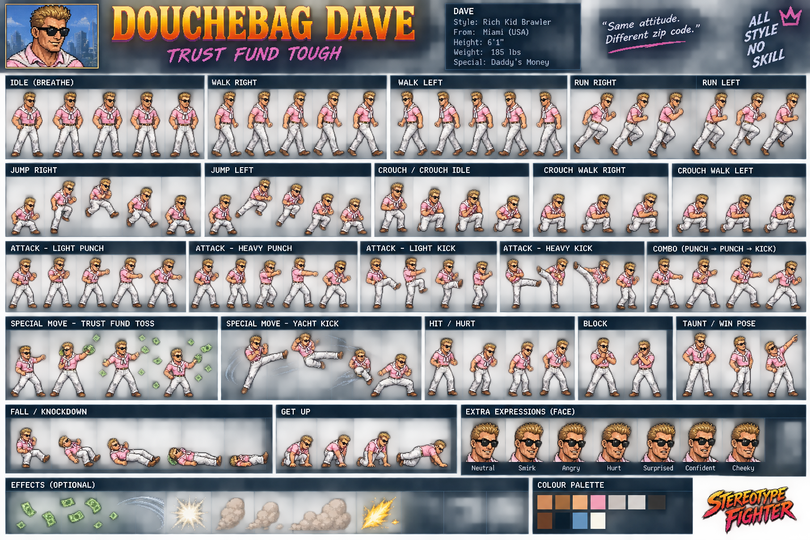

ORIGINAL CHARACTER ARTStereotype Fighters
Choose from 18 larger-than-life fighters and trade punches, kicks and specials in the Neon Quarter. Take on the CPU, challenge a friend on one keyboard, or sharpen your timing in Practice.
18 fighters3 CPU difficultiesPractice mode
Controls & game notes
Player 1: WASD to move, jump and crouch; F punch, G kick, H special, E block.
Player 2: Arrow keys; J punch, K kick, L special, I block. P or Escape pauses.
Player 1 touch controls are available on touch devices. Local 2P needs a keyboard. This is a work-in-progress prototype; some fighters use fallback poses and specials share a short-range implementation.
Game source & full notes ↗